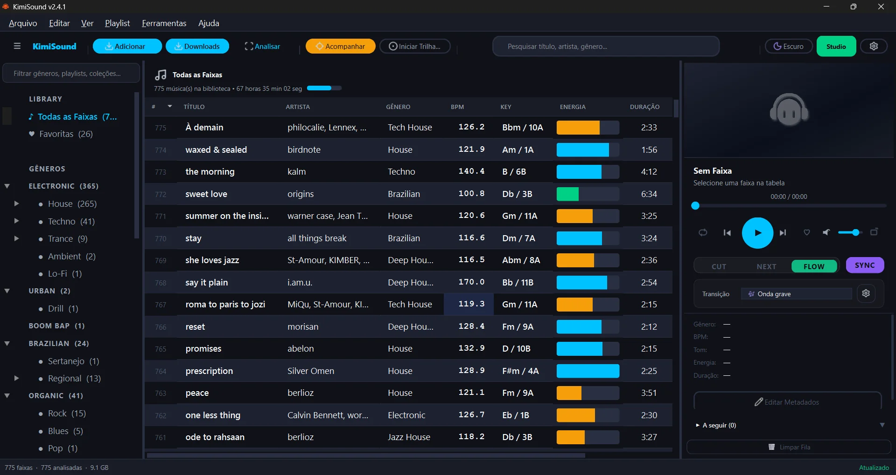
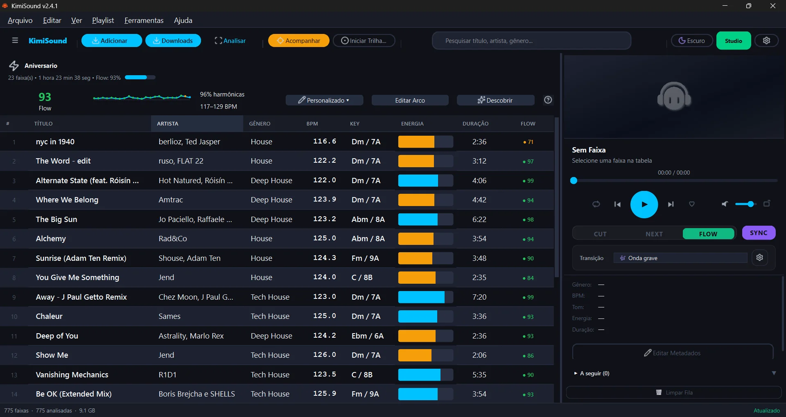
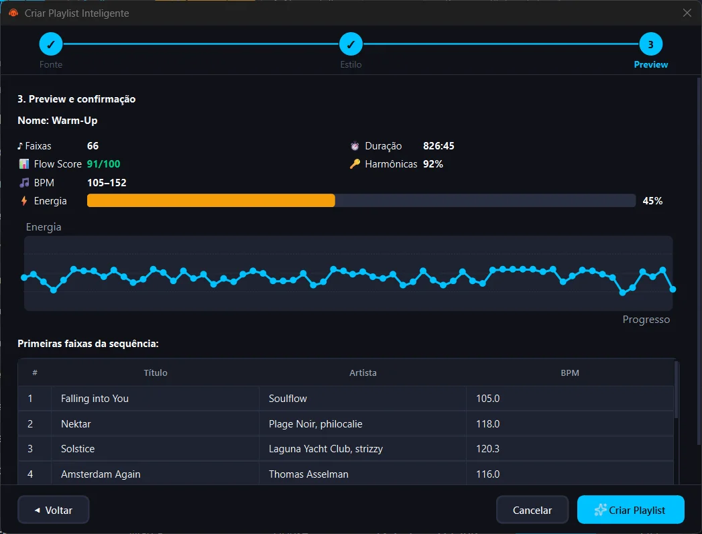
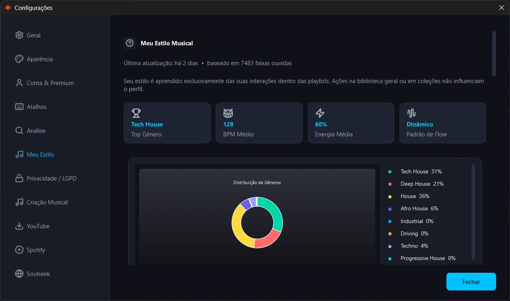

â± 03H
3 horas desperdiçadas
Testando transposições faixa por faixa, sem saber se vai funcionar na pista até ser tarde demais.
O único software para DJs que calcula compatibilidade musical em tempo real, escolhe a melhor próxima faixa e executa transições inteligentes prontas para a pista em 1 clique.

Testando transposições faixa por faixa, sem saber se vai funcionar na pista até ser tarde demais.
Você sente que uma faixa "encaixa" — mas não tem dados reais para confirmar. É intuição vs. certeza.
Arquivos em pastas diferentes, metadados errados, sem categorização. Você sabe que tem a música certa — mas não acha.
"E se você pudesse VER a compatibilidade antes de ouvir?"
7 tecnologias de inteligência musical integradas em uma única interface.
Cada faixa recebe uma pontuação 0–100 calculada por IA. Verde = transição perfeita. Vermelho = evite. Você toma decisões com dados, não intuição.
Escolha o arco de energia, defina duração, deixe a IA montar. Pronto em segundos.
BPM, tonalidade em notação Camelot, energia, danceabilidade — automático.
Crossfade beat-aligned de 8 segundos com trigger adaptativo, snap a frases musicais, re-snap da faixa B no beat grid e BPM Sync seguro no Windows. A transição soa musical na prática, não só no papel.
Aprende seus gêneros favoritos, faixa de BPM e padrões de energia. Mais uso, mais preciso.
Com base no DNA do seu set atual, sugerimos faixas que você deveria incluir — mas ainda não considerou.
Eu gastava 4 horas toda semana preparando sets. Hoje faço em 20 minutos com uma qualidade muito maior. O Flow Score mudou minha forma de pensar harmonia.
A parte de descoberta de faixas é surreal. Ele encontrou combinações que eu nunca teria pensado — e funcionaram perfeitamente na pista.
Finalmente um software que trata a biblioteca do DJ com a seriedade que merece. O export para Pioneer foi o último prego no caixão do trabalho manual.
Cada faixa exibe BPM, tonalidade em notação Camelot, energia, gênero e Flow Score — calculados em 0,1 segundo. Decisões com dados, não com intuição.

Selecione o template de energia — Warm-Up gradual, Peak-Time explosivo, Festival épico, After-Hours hipnótico. A IA seleciona, ordena e calibra as transições, incluindo o ponto certo de entrada da próxima faixa.

O dashboard Meu Estilo mostra exatamente o que a IA aprendeu — distribuição de gêneros, faixa de BPM favorita, padrões de energia. Granular e resetável.

Sabe quando você deixa tocando, rola uma sequência incrÃvel… e depois não lembra nenhuma das músicas que passaram? Acabou.
Ligue a gravação e siga tocando. O KimiSound registra cada faixa, na ordem exata, e salva tudo como uma Trilha reproduzÃvel. Sua sessão vira histórico — pra revisitar, reaproveitar e transformar no seu próximo set.
Corrija o gênero de UMA faixa — a IA nunca mais erra músicas similares. 100% offline, 100% privado.
Clique no gênero de qualquer faixa na tabela e selecione o valor correto — o KimiSound cria uma impressão digital sonora exclusiva da faixa e ensina o classificador. A partir daÃ, ele passa a reconhecer músicas parecidas automaticamente.
Diferente de serviços em nuvem que vendem seu perfil musical, o KimiSound processa tudo localmente. Toda a inteligência e o seu aprendizado nunca saem do seu computador.
Quanto mais você corrige, mais preciso o classificador fica para o seu acervo. Música brasileira, eletrônica underground, raridades — o modelo se adapta ao seu estilo.
🧠O contador na StatusBar mostra quantas músicas já contribuÃram para o auto-treinamento
14 dias grátis no Pro. Sem cartão de crédito.
ou R$ 190/ano
ou R$ 490/ano
Se não gostar, reembolso integral sem perguntas. Cancele quando quiser pelo Stripe Customer Portal. Sem multa, sem letra miúda.
Todos os planos incluem atualizações automáticas · Cancele quando quiser · Cupom PRIMEIRA = 30% off no primeiro mês
Comece hoje. 14 dias grátis. Sem cartão.